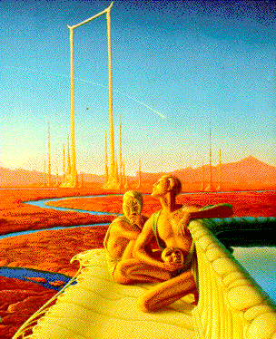
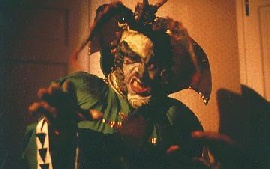
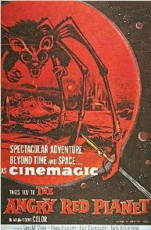
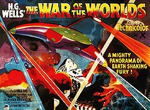

Planet Mars in Popular Culture
Picture: The ancient, beautiful Martians of Ray Bradbury's The Martian Chronicles. (Used with permission from Bantam Doubleday Dell publishers)
|
 Why is it that
people tend to talk of "Martians", rather than, say, Saturnians or
Jovians, when the topic of extraterrestrial life is broached?
Historically, Mars was thought to be the most likely of the planets to
harbor life. Popular culture in the form of literature, and then later
radio and film, reflected such beliefs. Public fascination with Martians
began in the late 19th century when, in 1877, astronomer Giovanni
Sciaparelli reported observations of large canali (meaning
"channels") on Mars. Unfortunately, the term "canali" was mistranslated
as "canals" in English. The Suez Canal, an engineering marvel of its
time, had just been completed in 1869, and to some people innovative,
technological Martians were implicated. In 1897, H. G. Wells' The War
of the Worlds was the first major work to explore the concept of the
"extraterrestrial invader" and exerted a considerable influence on the
public psyche. A few years later, even astronomers such as Percival Lowell
seriously countenanced the possibility of advanced lifeforms as
described in his book Mars as the Abode of Life (1910).
Consequently, Mars began to take a special place in popular culture
around the turn of the 20th century which has continued to this day. Of
course, this is not to belittle the unique role Mars has also played in
the history of science: in particular, the recorded movement of Mars led
Johannes Kepler (1571-1630) to formulate his three laws of
planetary motion (two in 1609 and the third in 1618) which
shattered medieval, anthropocentric notions of astronomy and laid the
foundations for the discoveries of Isaac Newton (1643-1727). In this fun and educational page, we take a look at Mars in literature, radio and film. We see how it is that Mars has inspired human imagination, sometimes in rather peculiar ways.
|
See also our Planet Mars Chronology - a companion page with year-by-year detail throughout the centuries from 3000 BC to the Space Age.
See Live from Mars: a resource for school teachers and students
Literature:
Jonathan Swift Gulliver's Travels (1726)
|
Jonathan Swift (1667-1745), the great Irish writer and satirist
makes a very curious reference to Mars' satellites in Gulliver's
Travels. In the book, astronomers on the fictional island of Laputa
(the king of which is fond of solving mathematical problems) are said to
have discovered two satellites around Mars, and Swift even details the
orbital mechanics with reference to Kepler's laws. In fact, the two
Martian satellites (Phobos, the inner satellite, and Deimos, the outer
one) were not discovered until 1877 by the American astronomer Asaph
Hall. Was the assumption of two satellites just a lucky guess on Swift's
part? And was it also coincidental that he correctly guessed that the
inner satellite orbited Mars in less than a day? Phobos actually has an
orbital period of 0.32 of a day and Deimos 1.26 of a day with radial
(semimajor axis) distances from Mars of 9379 km and 23459 km,
respectively. (Mars has a mean diameter of 6780 km.) Actually, Swift was
almost certainly aware of Kepler's speculation that Mars had two
moons. Kepler based this on naive mathematical intuition: because Venus
had no moon and Earth had one moon, it somehow implied that Mars must
have two moons as an outwards progression from the sun. Part III, Chapter 3: "[The astronomers]..have likewise discovered two lesser stars, or satellites, which revolve about Mars, whereof the innermost is distant from the center of the primary planet exactly three of his diameters, and the outermost five; the former revolves in the space of ten hours, and the latter in twenty-one and a half; so that the squares of their periodical times are very near in the same proportion with the cubes of their distance from the center of Mars, which evidently shows them to be governed by the same law of gravitation that influences the other heavenly bodies." |
Herbert G. Wells The War of the Worlds (serialized: 1897; book: 1898)
|
The Wars of the Worlds is the story of the invasion of Earth by
technologically-advanced Martians. The Martians flee their dying
planet and descend in ten immense rocket capsules in southern
England. Their plan, to take over the Earth and its resources, begins
with an attack on London. People flee in panic, helpless against the
superior weaponry of the Martians which includes a ``Heat Ray'' and
poisonous Black Smoke. Victory seems secure when suddenly the Martians
succumb to a fatal infection by terrestrial germs. The 1890s were unhappy times for Wells as a struggling writer but fortunate ones for his literature. The Wars of the Worlds is a classic of English literature and much unlike the tawdry, sensationalist sci-fi writing and films that have imitated and recapitulated Wells' ideas. In the novel, a Wells-like writer on philosophy and science narrates the story. The book reflects a period when a transition was occurring in Wells' thinking from the entirely pessimistic world view of his earlier The Time Machine (1895) to a more optimistic vision for future mankind evident in Wells' later writing. Historically, The Wars of the Worlds followed a series of semi-documentary novels that predicted war in Europe following the unification and militarization of Germany beginning with George Chesney's The Battle of Dorking (1871). In addition, The War of the Worlds is very much a product of ideas that were at the forefront of Wells' nineteenth century mind. These include Darwinism, i.e. cumulative selection in biological systems, and a growing awareness of the unpleasant side-effects of technology such as industrial slums, instruments of war, and irresponsible power. The monstrous Martians, the narrator tells us, have mutated with the help of technology from their once humanoid form to a disgusting, vampire-like state --- they are a possible future for mankind. Apparent progress has somehow led to decline. Indeed, this idea is inherent in the vulnerability of the Martians: "Micro-organisms...have either never appeared on Mars or Martian sanitary science eliminated them ages ago". So it is that biology ultimately defeats the Martians: "These germs of disease have taken toll of humanity since the beginning of things - taken toll of our pre-human ancestors since life began here...By the toll of a billion deaths man has bought his birthright of the earth, and it is his against all-comers...For neither do men live nor die in vain". The last sentence, which ordinarily would be a cliche of Victorian sentimentality, is a Darwinist insight in this context. The moral, perhaps, to Wells' story is that technology will not defeat us or turn us into the nightmare Martians as long as we hold fast to our diverse biological heritage --- a moral which is just as relevant to our environmentally-threatened world today as it was to Victorian England. Famous opening paragraph: (note how the ubiquitous micro-organisms which prove crucial later in the plot are mentioned here at the very beginning of the novel) "No one would have believed in the last years of the nineteenth century that this world was being watched keenly and closely by intelligences greater than man's and yet as mortal as his own; that as men busied themselves about their various concerns they were scrutinised and studied, perhaps almost as narrowly as a man with a microscope might scrutinise the transient creatures that swarm and multiply in a drop of water. With infinite complacency men went to and fro over this globe about their little affairs, serene in their assurance of their empire over matter. It is possible that the infusoria under the microscope do the same. No one gave a thought to the older worlds of space as sources of human danger, or thought of them only to dismiss the idea of life upon them as impossible or improbable. It is curious to recall some of the mental habits of those departed days. At most terrestrial men fancied there might be other men upon Mars, perhaps inferior to themselves and ready to welcome a missionary enterprise. Yet across the gulf of space, minds that are to our minds as ours are to those of the beasts that perish, intellects vast and cool and unsympathetic, regarded this earth with envious eyes, and slowly and surely drew their plans against us. And early in the twentieth century came the great disillusionment." |
Edgar Rice Burroughs
| Perhaps better known as the creator of "Tarzan of the Apes",
Edgar Rice Burroughs also wrote westerns and science fiction - a total
of 97 stories. Burroughs' series of Mars novels, also known as the
Martian Tales, comprises eleven novels which describe the adventures
of a nineteenth century Confederate Civil War veteran (like Burroughs'
father) named John Carter who is transported to Mars where he must
adapt to its strange cultures. Carter, as a classic fictional hero,
frequently encounters life-threatening situations which he only
narrowly escapes. Carter marries, has children, rises to the top of
Martian politics, and there fights for justice. His noble actions reflect
Burroughs' personal moral beliefs. Burroughs, like many other
writers, envisions a dying Mars with oceans that are drying up and
constantly warring kingdoms fighting desperately against the peril of
a vanishing atmosphere and against each other. From A Princess on Mars (written in 1911, first published hardback in 1917): "I opened my eyes upon a strange and weird landscape. I knew that I was on Mars; not once did I question either my sanity or my wakefulness. I was not asleep, no need for pinching here; my inner consciousness told me as plainly that I was upon Mars as your conscious mind tells you that you are upon Earth. You do not question the fact; neither did I." See A Princess on Mars |
Ray Bradbury
|
Ray Bradbury's thought-provoking science fiction written in highly
literate prose arguably makes him one of the world's best science
fiction authors. The Martian Chronicles (1951, also
published as The Silver Locusts) is a collection of loosely-tied short
stories which together comprise the story of man's conquest of
Mars. Many of the chapters in The Martian Chronicles were
published separately, sometimes with minor changes, sometimes with
different titles; these include There Will Come Soft Rains, The Fire
Balloons, and others. In early science fiction, Martians are the most
common culprits for invasions of Earth - a trend which followed The
War of the Worlds by H.G. Wells. In Bradbury's The Martian
Chronicles, we see how it can happen the other way around: humans
are the alien invaders on Mars. As in H. G. Wells' seminal novel, the
Martians are killed by terrestrial bacteria. But this time the
Martians are a beautiful, wise and ancient civilization. The book
raises important questions about human behavior, and how people should
react when they encounter alien races. It is a study of man's
selfishness, in particular, the destruction of culture by ignorant
politicians and businessmen. "...The Men of Earth came to Mars. They came because they were afraid or unafraid, because they were happy or unhappy, because they felt like Pilgrims or did not feel like Pilgrims. There was a reason for each man. They were leaving bad wives or bad towns; they were coming to find something or leave something or get something, to dig up something or bury something or leave something alone. They were coming with small dreams or large dreams or none at all....it was not unusual that the first men were few. The numbers grew steadily in proportion to the census of Earth Men already on Mars. There was comfort in numbers. But the first Lonely Ones had to stand by themselves..." |
Robert Heinlein
|
"I have been
a stranger in a strange land", Exodus 2:22, gave the title to Robert
Heinlein's Stranger in a Strange Land (1961). This book tends
to be a favorite amongst sci-fi fans -- it won a Hugo award in
1962. Nevertheless, amongst general literature, it was the first book
by a devoted science-fiction writer to reach the New York Times
best-seller list. Valentine Michael Smith, born on Mars, is the sole survivor of the first manned mission to the planet. Subsequently, he is raised and educated by Martians. When Smith gets returned to Earth as a young man, he has human instincts but an alien perspective and superhuman psychic powers. The time is roughly the 1990s, as written from the 1960s, and terrestrial society is envisioned to be highly commercialized and corrupt ("He's an honest politician. He stays bought."). Smith progresses from a total ignorance of this (essentially western) culture to an understanding of human psychology. Eventually, his efforts to reconcile human and Martian sensibilities give rise to a new "free love" religion through which people achieve spiritual transformation. There is a tragic but unsurprising ending. |
Kim Stanley Robinson
|
Red Mars (1993). Green Mars (1995). Blue Mars
(1997). This trilogy is a thought-provoking story of terraforming Mars that stretches more than three centuries into the future. What distinguishes Kim Stanley Robinson's books from other science fiction is the sheer array of socio-economic issues that is confronted: post-corporate governance, environmental ethics, population growth, human longevity, and natural capital issues. On the other hand, the trilogy does suffer from the intransigent assumptions of a 'technological optimist' worldview. (Is terraforming Mars really possible, I ask?). Red Mars describes the colonization efforts of the first hundred settlers on Mars. Splits develop between colonists favoring rapid terraforming to a 'Green Mars' and a minority of 'Reds' who want to see Mars preserved. Issues of corporate control versus democracy eventually culminate in an attempt by the Martians to gain independence from Earth and its transnationals. The second book Green Mars deals with the transition of Mars to an Earth-like world with a breathable atmosphere in the late 21st century. Meanwhile Earth itself is undergoing severe environmental catastrophes due to environmental degradation by the cumulative effects of industrial pollution. Blue Mars describes the resolution of conflicts in terrestrial and Martian societies. (For scientific background, see this article by my colleague, Chris McKay, on Bringing Life to Mars, i.e. terraforming) |
The discussion of books about Mars above is by no means exhaustive, of
course, but merely presents some highlights. Other works of fiction (and
non-fiction) associated with Mars are given in a Mars
Reading List from part of the Mars Global Surveyor
Education Program.
Some recent, scientifically-oriented novels about Mars include Geoffrey
Landis's Mars
Crossing and C. K. Anderson's A Step Beyond.
Radio:
Radio versions of The War of the Worlds
|
Other Martian Radio
|
Film:
Recent movies
|
Recently, Red
Planet (2000), directed by Anthony Hoffman, was released. Also Mission to Mars, directed by Brian De Palma, was released in 2000. Mars Attacks! (1996) (Starring Jack Nicholson, Glenn Close, Natalie Portman, Pierce Brosnan, Annette Bening, Danny Devito, Rod Steiger, Tom Jones). Martians rocket across space and invade Earth. Humanity is corralled and subjugated in horrible conditions. Atrocious acts of brutal violence are witnessed. Slavering bug-eyed monsters are sighted pillaging the countryside. But have no fear! Eventually, the people of Earth defeat the Martians. Finally, the movie ends with Tom Jones jigging about to "It's not Unusual" and the Mars Attacks are clearly over, even though you wish they would start up again at this point. Total Recall (1990) (Director: Paul Verhoeven, starring Arnold Schwarzeneggar, Sharon Stone): Douglas Quaid (Schwarzeneggar) is haunted by the same dream every night about a journey to Mars. He hopes to find out more about this dream and buys a vacation at Rekall Inc. where they sell implanted memories. Unfortunately, something goes wrong with the memory implantation and he remembers being a secret agent fighting against an evil Mars administrator, Coohagen. So the story begins and what follows is a rollercoaster ride until the massive end of the movie. Alternatively the plot goes something like this: Arnold Schwarzenegger plays a man with big muscles; special effects; gratuitous violence; the end. Total Recall is based on a short story by sci-fi, cyberpunk author Philip K. Dick entitled We Can Remember It For You Wholesale, only twenty pages long, and set entirely in two small rooms in New York City. The story is complex and alien - a painful, detailed examination of a man recovering suppressed memories, and the reactions of those involved in his "therapy". Dick himself was in therapy at the time of writing the story. Philip K. Dick's novel Do androids dream of electric sheep? also inspired the film Bladerunner. Total Recall ends when atmospheric gases and water are liberated from sub-surface rocks of Mars. Curious about whether this possibly has any scientific basis? See "Is there liquid water on Mars?" from our Mars' Frequently Asked Questions page. Lobster Man from Mars (1989)  A comedy. A young film student tries to sell his weird movie to a desparate film producer who is looking for a tax write-off. The producer screens the film "Lobster Man From Mars". A `film within-a-film' sendup follows: Mars suffers from the loss of its atmosphere, and the Martians send the evil Lobster Man to Earth to steal its air. A mad scientist, a girl, and an army colonel foil the alien plot. The producer buys the movie, but it makes a huge profit and he is sent to jail. The film student then takes his place as the studio hot shot. Invaders from Mars (1986) Directed by Tobe Hopper. Starring Karen Black, Hunter Carson, Timothy Bottoms. In this remake of the classic 50s film, a boy tries to stop an invasion of his town by aliens who take over the the minds of his parents, his least-liked schoolteacher, and other townspeople. With the aid of the school nurse the boy enlists the help of the U.S. army. |
Old movies
T.S. Eliot once described the science fiction genre as a "product of the pre-adolescent mind". This is an unfair comment for genuine works of literary quality (e.g. by Wells and Bradbury), but probably wholly deserved for some of the movies that follow.
|
Planet of Blood (1966) Basil Rathbone
(the actor usually associated with Sherlock Holmes), John Saxon, Dennis
Hopper, Florence Marly. An expedition to Mars finds a crashed alien
space ship. They bring back the only survivor; a green skinned, glowing
eyed, bloodsucking, female alien who preys on the crew members. Mars Needs Women (1966) The title says it all. Tommy Kirk leads his fellow Martians on an interplanetary quest for females. Yvonne 'Batgirl' Craig is a scientist chosen by the invaders. Santa Claus Conquers The Martians (1964) John Call, Pia Zadora, Jamie Farr. Santa is captured by Martians to stop Earth kids from being cheery. But once on Mars, Santa teaches those little Martian brats the real meaning of Christmas. Quite possibly the silliest movie ever made. The most excruciating and cringe-inducing moment is at the end when the Martians, who are a bunch of kids attired in green stockings, sing "Hooray for Santy [sic] Claus" Robinson Crusoe on Mars (1964) Paul ("Apollo 13") Mantee, Victor Lundin, and Adam ("Batman") West. Directed by Byron Haskins, who also directed War of the Worlds. This movie follows Daniel Defoe's Robinson Crusoe plot, but without the fear-factor of footprints from the original story. Cmdr Christopher Draper (Mantee) must survive on the barren planet accompanied only by his pet monkey, Mona. Draper discovers minor plant life in the "canals" of Mars and bakes Martian rocks to release oxygen in an otherwise oxygen-poor atmosphere. Eventually a Man Friday appears and the trio ends up being chased by flying saucers to one of the polar icecaps. Some uncharitable people have said that the best acting in the movie is by Mona, the pet monkey. Many scenes were shot at Zabriskie Point, Death Valley.  The Angry Red Planet (1959) Gerald Mohr, Nora Hayden, Les Tremayne. A group of astronauts land on Mars. They then have to put up with continual battles against aliens, a giant amoeba, and the dreaded Rat-Bat-Spider thing (see picture). Colored lenses give a sickly pink hue to all the Mars sequences. Devil Girl from Mars (1954) Not the kind of girl you really want to get involved with: pouty, leather-clad alien bitch Patricia Laffa journeys to Earth in a giant spaceship (accompanied by the obligatory killer robot) to bring back men for breeding purposes. Very camp. Also with Hazel Court, Hugh McDermott and Adrienne Corri.  The War of the Worlds (1953) Directed by Byron Haskin, starring Gene Barry as Clayton Forrester. A film adaptation of H.G. Well's classic novel best understood if you bear in mind that it was made at the height of the Cold War - i.e. replace Martian with Russian. The residents of a small town are excited when a flaming meteor lands in the hills. Their joy is somewhat dampened when they discover it has passengers who are not very friendly. Won an Academy Award for special effects. Invaders from Mars (1953) Little David MacLean has a problem--all the adults in town begin acting strangely shortly after he sees strange lights settling behind a hill near his home. As more and more adults are affected, he must turn to the pretty Dr. Blake for protection. Eventually, he must confront his fears in the unusual conclusion. Remade in 1986. Abbott and Costello Go to Mars (1953) Lester (Bud Abbott) and Orville (Lou Costello) accidentally launch a rocket which is supposed to fly to Mars. Instead it goes to New Orleans for Mardi Gras. They are then forced by bankrobber Mugsy and his pal Harry to fly to Venus where they find a civilization made up entirely of women, men having been banished. Red Planet Mars (1952) Peter Graves, Andrea King, Morris Ankrum. A lame, anti-communist movie made under the influence of McCarthyism. Communications from Mars establish that the planet is almost a utopia ruled by a supreme authority. News of this somehow topples Russia and sends the world on to a new higher plane of existence. Flight to Mars (1951) (Color) Carmon Mitchell, Arthur Franz, Morris Ankrum. A team of scientists and a newspaper reporter fly to Mars only to find that Martians look identical to humans. Mars is running low on an important natural resource called Corium (whatever that is), so the Martians plan to steal the Earthmen's rocket and conquer Earth. Fortunately, a sympathetic Martian underground helps the Earthmen foil the dastardly plan. Rocketship X-M (1950) Lloyd Bridges, Hugh O'Brian & Morris Ankrum. Five astronauts set off to explore the moon but due to a malfunction they end up on Mars (..so annoying when that happens!). There they find evidence of an advanced civilization that has mostly perished in an atomic holocaust. The few Martian survivors now live like savage cavemen. After two of the astronauts are killed, the remaining three attempt to return to Earth. Flash Gordon: Mars Attacks the World (1938) (a.k.a. Flash Gordon's Trip to Mars, Deadly Ray from Mars) A feature-length (badly edited) abridgement of the 15-episode serial Flash Gordon's Trip to Mars. Flash Gordon (Buster Crabbe), his lady love Dale Arden (Jean Rogers), and scientific genius Dr. Zarkov (Frank Shannon), blast off for Mars, where a mysterious force is sucking the nitrogen from the Earth's atmosphere. They hope to determine the source of this power and destroy it. The villain behind the Earth-threatening scheme is none other than "Ming the Merciless" (Charles Middleton), who also foments a deadly feud between Prince Barin of the planet Mongo (Richard Alexander) and the Clay People of Mars. Ming hopes that this battle will allow him to conquer the universe in the confusion. But the Clay People ultimately align with Barin and Flash Gordon, and Ming is defeated. Aelita: Queen of Mars (1924) Director: Jakov Protazanov. A silent Soviet propaganda film : a comparison between 1921's Russia, and a capitalistic planet Mars. Engineer Los is building a spaceship to reach Mars. He kills his wife, Natacha (a refugee care worker), flees to Mars, and falls in love with Aelita, the Queen of Mars. But it's all a dream, thank goodness. |
Miscellaneous:
Poetry about Mars, includes "The News from Mars" (New England Review, Winter 1991) by Wendy Battin
Wind data from Mars Pathfinder combined with piano works of J. S. Bach provide the unusual musical basis of "Winds of Mars"
This webpage was written and
compiled in the spare time of David Catling, a
research planetary scientist in the Space Science Division
at NASA Ames Research Center. This webpage has been used as
research material for programs by National Public Radio (NPR) and BBC TV
about culture and science; and also for an
Associated Press article. Appropriate suggestions to improve this
page will be gladly received. I hope you enjoyed the read! You may also
be interestred in my Mars Frequently
Asked Questions
webpage, for scientific info about Mars.
This webpage was first written on a rainy weekend in
1995. Updates occur sporadically in my infinite free time.